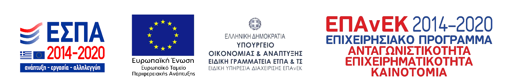

Παρουσία στο συνέδριο ECCB 2018
17ο Ευρωπαϊκό Συνέδριο Υπολογιστικής Βιολογίας. 8-12 Σεπτεμβρίου 2018, Αθήνα, Ελλάδα.
στην ιστοσελίδα του Δημοκριτείου Πανεπιστημίου Θράκης για το ELIXIR-GR.
Το ELIXIR-GR αποτελεί τον ελληνικό εθνικό κόμβο του ESFRI European RI ELIXIR, μιας κατανεμημένης ηλεκτρονικής υποδομής που στοχεύει στην οικοδόμηση μιας βιώσιμης ευρωπαϊκής υποδομής βιολογικών πληροφοριών. Το ELIXIR-GR υποστηρίζει την έρευνα στις επιστήμες της ζωής και την εφαρμογή τους στην ιατρική, τις βιοεπιστήμες και την κοινωνία. Προσφέρει έναν κατάλογο εργαλείων, υπηρεσιών και αναφορών για μέτρηση επίδοσης , εξασφαλίζοντας βέλτιστες πρακτικές, βιωσιμότητα και διαλειτουργικότητα με άλλες υποδομές βιολογικών και ιατρικών επιστημών.

17ο Ευρωπαϊκό Συνέδριο Υπολογιστικής Βιολογίας. 8-12 Σεπτεμβρίου 2018, Αθήνα, Ελλάδα.
69ο Πανελλήνιο Συνέδριο Ελληνικής Εταιρείας Βιοχημείας και Μοριακής Βιολογίας. 23-25 Νοεμβρίου 2018, Λάρισα, Ελλάδα.
40ο Ετήσιο Συνέδριο της Ελληνικής Εταιρείας Βιολογικών Επιστημών. 24-26 Μαΐου 2018, Βέροια, Ελλάδα.
Σε αυτήν την ενότητα παραθέτουμε τα προγράμματα που έγιναν διαθέσιμα στο ELIXIR-GR.
Ο αλγόριθμός μας για την ταυτοποίηση SNPs που συσχετίζονται με PCA. Λαμβάνει ως είσοδο ένα μητρώο α Our algorithm for identifying PCA-correlated SNPs takes as input a properly encoded SNP data matrix and outputs a score for each SNP. SNPs corresponding to the highest scores are typically the most informative in reproducing the structure of the population.
Performs ranking of variants in genomic datasets, integrating information from multiple sources to prioritize each variant by its deleteriousness, novelty and existing information.
The Network Analyzer is a tool to visualize the output from the database for annotation, visualization and integrated discovery (DAVID, https://david.ncifcrf.gov) in order to reveal overlapping biological connections for a list of relevant genes.
Implementing genomewide association studies for the identification of genes that underlie disease – educational material.http://genomap.mbg.duth.gr/index.php/23-educational-material
Phasellus convallis elit id ullam corper amet et pulvinar. Duis aliquam turpis mauris, sed ultricies erat dapibus.
Πιλοτική μελέτη για εύρεση βιοδεικτών από ncRNA. Λειτουργικός σχολιασμός επιγενετικών και μεταγραφικών ρυθμιστικών παραγόντων. Εξαγωγή μοριακών υπογραφών. Διαλεύκανση των ρυθμιστικών μονοπατιών στην ομοιόσταση και την κακοήθεια. A pilot study for the discovery of ncRNA biomarkers. Functional annotation of epigenetic and transcription regulation factors. Extraction of molecular signatures. Clarification of the regulatory pathways in homeostasis and malignancy.
Τα μέλη της ομάδας.
Αναπληρωτής Καθηγητής ΔΠΘ
Επιστημονικά Υπεύθυνος Έργου / Οργάνωση, Παρακολούθηση και Συντονισμός λειτουργίας Υποδομής, Σύνταξη εκθέσεων πεπραγμένων, προβολή, δημοσιότητα
Αναπληρώτρια Καθηγήτρια ΔΠΘ
Συμβουλευτικός ρόλος / Συμμετοχή στη σύνταξη της τελικής έκθεσης πεπραγμένων
Αναπληρωτής Καθηγητής ΔΠΘ
Συμμετοχή στην ανάπτυξη και λειτουργία της υποδομής
Εξωτερικός συνεργάτης, Μεταδιδάκτορας
Συμμετοχή στην ανάπτυξη, λειτουργία, και δημοσιότητα της υποδομής.
Εξωτερικός συνεργάτης, Μεταδιδάκτορας
Συμμετοχή στην ανάπτυξη, λειτουργία, και δημοσιότητα της υποδομής.
Εξωτερική συνεργάτιδα
Συμμετοχή στην ανάπτυξη, λειτουργία, και δημοσιότητα της υποδομής.
Εξωτερικός συνεργάτης
Συμμετοχή στην ανάπτυξη, λειτουργία, και δημοσιότητα της υποδομής.
Εξωτερικός συνεργάτης
Συμμετοχή στην ανάπτυξη, λειτουργία, και δημοσιότητα της υποδομής.
Εξωτερική συνεργάτιδα, Μεταδιδάκτορας
Συμμετοχή στην ανάπτυξη, λειτουργία, και δημοσιότητα της υποδομής.
Εξωτερικός Συνεργάτης
Συμμετοχή στην ανάπτυξη, λειτουργία, και δημοσιότητα της υποδομής.
Η επικοινωνία μαζί σας είναι σημαντική για εμάς. Αν έχετε οποιαδήποτε απορία για το ELIXIR-GR ή αντιμετωπίζετε κάποιο πρόβλημα με τις υπηρεσίες μας, παρακαλώ επικοινωνήστε μαζί μας χρησιμοποιώντας την κάτωθι φόρμα.